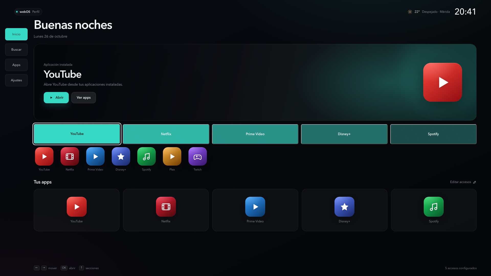
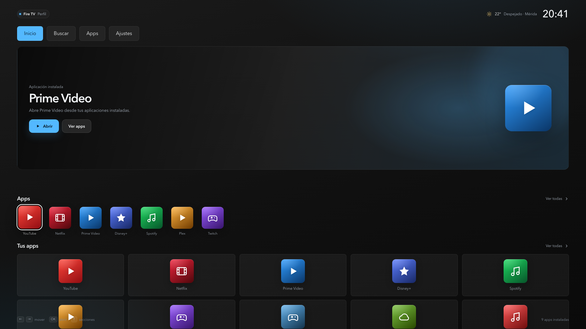
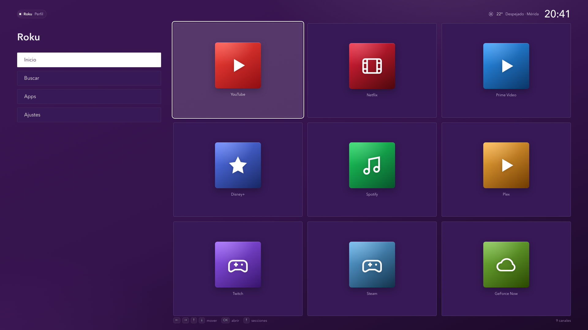
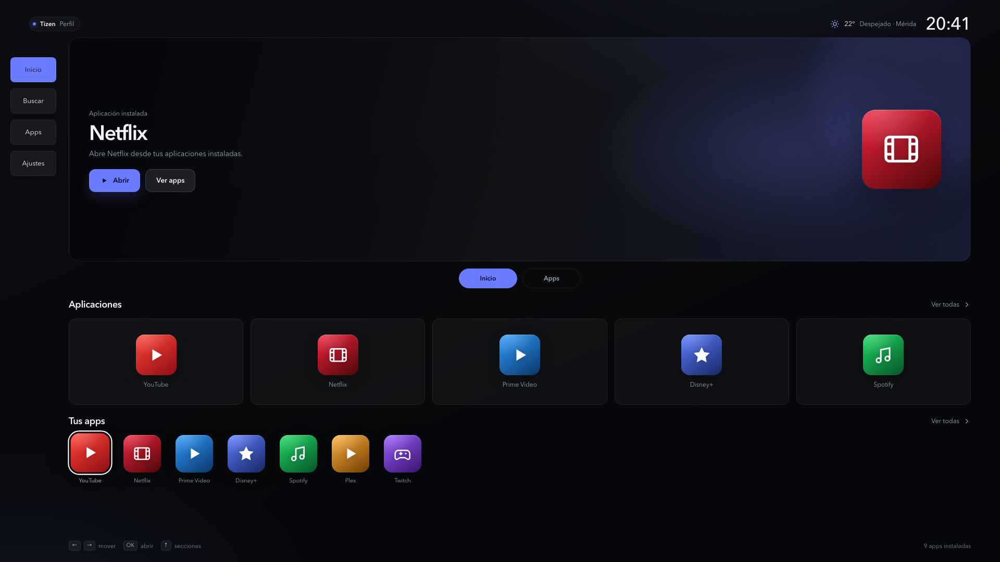
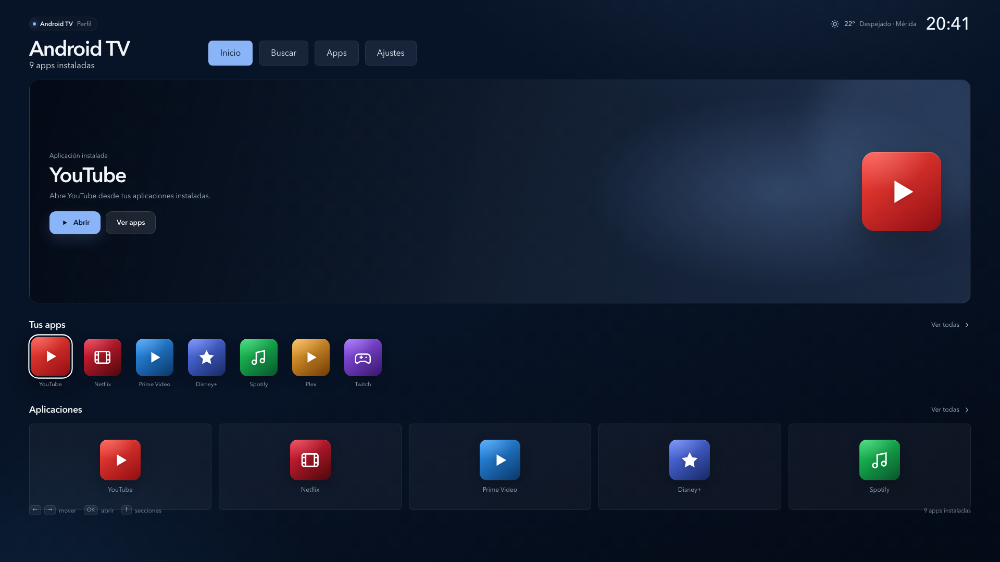
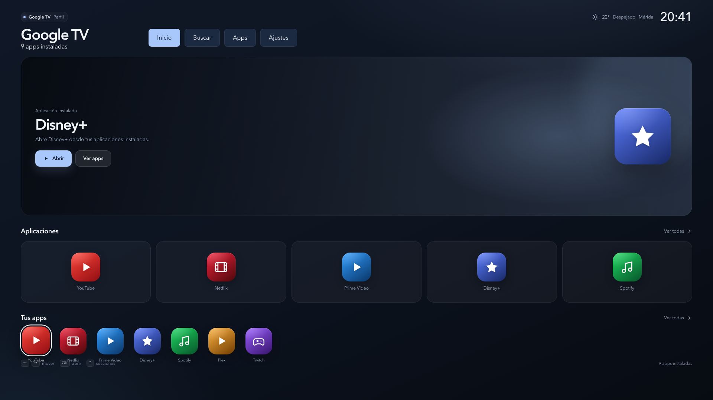
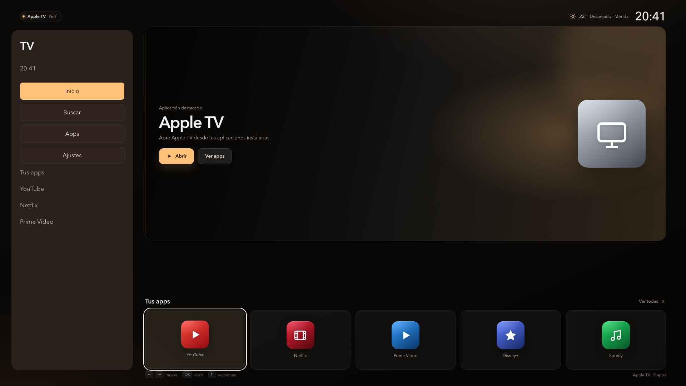
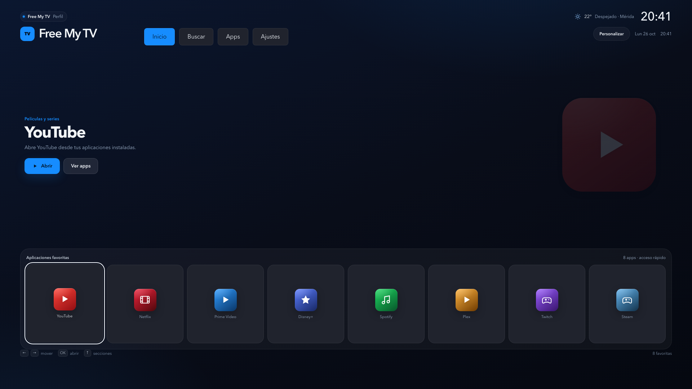

Sin barra lateral universal añadida. Cada perfil usa su propia navegación para cambiar el contenido. Cada perfil conserva su paleta, su radio y su composición real de Inicio; Roku mantiene su grilla y Free My TV su panel de favoritos.








Cada layout conserva su navegación original. Inicio, Buscar y Apps cambian dentro de su área de contenido.